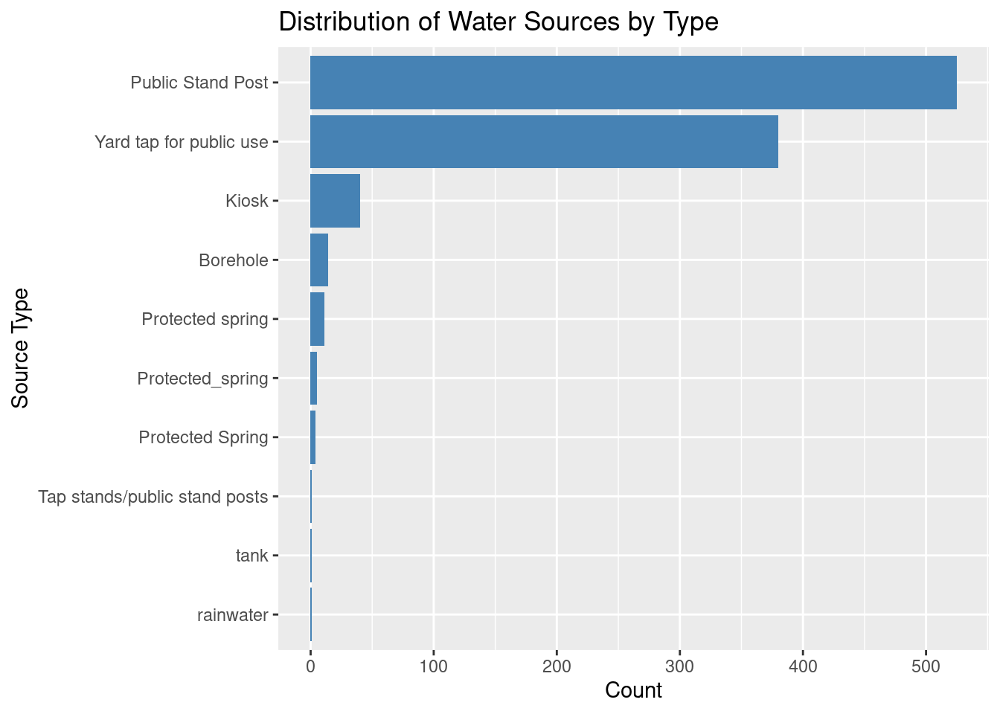
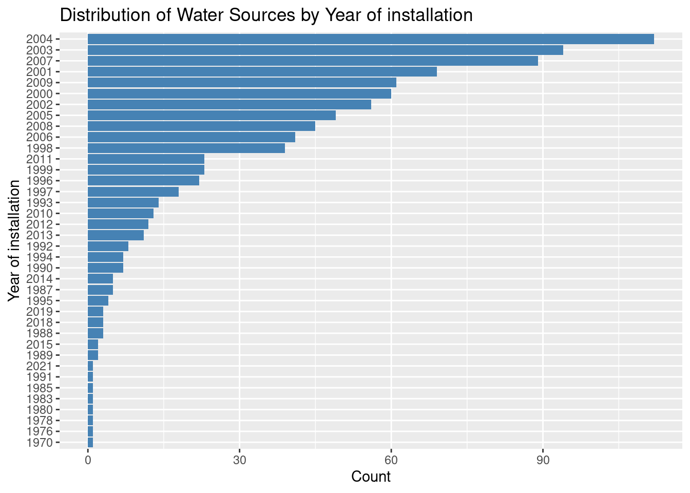
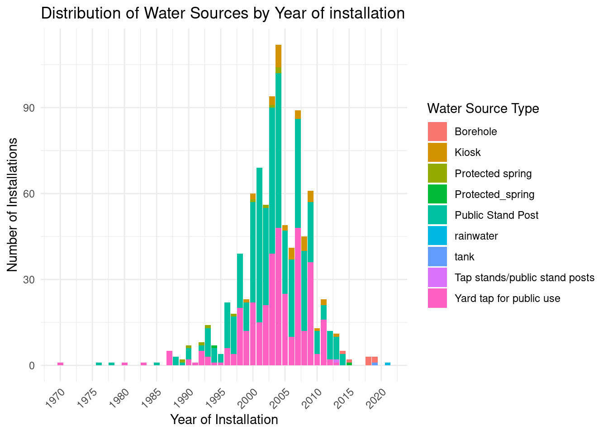
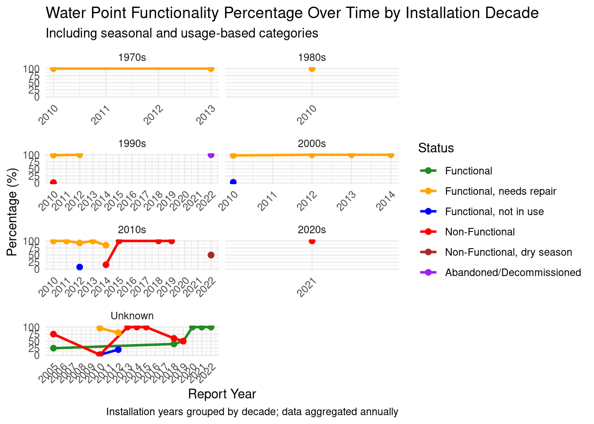

![]()
library(tidyverse)
library(dplyr)
library(ggplot2)
library(knitr)Benchmarking Water Point Functionality in Uganda (2017–2020): Insights for Sustainable Rural Water Supply
Introduction
Access to safe and reliable water remains a major development challenge in Uganda, particularly in rural areas where many communities rely on point water sources such as boreholes, protected springs, and hand-dug wells. While significant progress has been made through government programs and the contributions of development partners, issues of non-functionality, seasonal variability, and inadequate maintenance continue to affect service reliability and sustainability.
This report analyzes a data set of water points documented between 2017 and 2020. The data set, sourced from the Water Point Data Exchange (WPDx), consolidates contributions from multiple organizations including local governments, NGOs, and international development actors such as Water For People. It includes data on water source types, functionality status, geographic distribution, and installation or service dates.
By benchmarking key indicators such as functionality over time and source type distribution, this analysis provides valuable insights into rural water service performance and infrastructure sustainability. The findings aim to support evidence-based decision-making and guide future investments to improve water service reliability and equity across Uganda.
Methods
Data Scope and Filtering
The dataset analyzed in this report was sourced from the Water Point Data Exchange (WPDx) platform, a global repository that consolidates water point data submitted by governments, NGOs, and development partners. The dataset includes water point records from multiple actors operating across Uganda, reflecting a broad range of implementation contexts and technologies.
To ensure relevance to the study objectives, the dataset was filtered to retain only records located within Uganda. Key fields of interest included:
Water source type (e.g., borehole, protected spring, public stand post)
Functionality status (e.g., functional, non-functional, abandoned)
Installation year and report date
Administrative location (region, district, sub-county)
Geo location (latitude and longitude)
Data Cleaning and Standardization
Several data cleaning and preprocessing steps were applied to enhance the usability and reliability of the data set:
Variable renaming: Administrative and categorical variables were renamed for clarity and consistency.
Removal of empty fields: Columns with all values missing were removed to streamline the dataset.
Date extraction: The “report_date” field was converted to reporting year to enable longitudinal analysis of water point functionality.
Installation decade grouping: “install_year” values were grouped into decades (e.g., 1990s, 2000s) to explore trends in performance relative to infrastructure age.
Analytical Approach
Following cleaning, the data was explored using a combination of summary statistics, frequency distributions, and visualizations. Key analyses included:
Distribution of water source types by frequency and year of installation
Temporal trends in water point functionality, dis aggregated by installation decade
Functionality status classification into standardized categories to assess sustainability performance over time
Identification of patterns across unknown or missing installation years
All data analysis and visualizations were conducted using R programming language, leveraging packages such as tidyverse, ggplot2,dplyr and knitr. Outputs were compiled into an HTML report using Quarto to support clear, reproducible reporting.
Reading the Data
#Read data
uganda_water_data <- read_csv(here::here("data/raw/Water_for_People_Uganda_2017_2020.csv"))Data Exploration Approach
glimpse(uganda_water_data)Rows: 1,000
Columns: 73
$ row_id <dbl> 442404, 523397, 704458, 641796, 641004, 4…
$ source <chr> "Water For People", "Water For People", "…
$ lat_deg <dbl> -0.09036500, -0.07654833, 0.41262000, 0.5…
$ lon_deg <dbl> 30.39466, 30.36167, 30.78027, 30.95388, 3…
$ report_date <dttm> 2018-03-02, 2018-03-01, 2021-03-31, 2014…
$ status_id <chr> "Yes", "Yes", "Yes", "Yes", "Yes", "No", …
$ water_source_clean <chr> NA, NA, "Piped Water", NA, NA, NA, NA, "P…
$ water_source_category <chr> NA, NA, "Piped Water", NA, NA, NA, NA, "S…
$ water_tech_clean <chr> "Public Tapstand", "Public Tapstand", "Ki…
$ `_water_tech_category` <chr> "Public Tapstand", "Public Tapstand", "Pu…
$ facility_type <chr> "Improved", "Improved", "Improved", "Impr…
$ clean_country_name <chr> "Uganda", "Uganda", "Uganda", "Uganda", "…
$ clean_country_id <chr> "UGA", "UGA", "UGA", "UGA", "UGA", "UGA",…
$ clean_adm1 <chr> "Western", "Western", "Western", "Western…
$ clean_adm2 <chr> "Kitagwenda", "Kitagwenda", "Kamwenge", "…
$ clean_adm3 <chr> "Kitagwenda", "Kitagwenda", "Kibale", "Ky…
$ clean_adm4 <chr> "Kicheche", "Buhanda", "Biguli", "Kakabar…
$ install_year <dbl> NA, NA, NA, 2013, 2019, NA, NA, 1994, 200…
$ installer <chr> NA, NA, NA, NA, NA, NA, NA, NA, NA, "Ugan…
$ rehab_year <lgl> NA, NA, NA, NA, NA, NA, NA, NA, NA, NA, N…
$ rehabilitator <lgl> NA, NA, NA, NA, NA, NA, NA, NA, NA, NA, N…
$ management_clean <chr> NA, NA, NA, "Community Management", "Priv…
$ status_clean <chr> "Functional", "Functional", "Functional",…
$ pay_clean <chr> NA, NA, NA, "Fees collected – annually", …
$ fecal_coliform_presence <chr> "Present", "Present", "Absent", NA, NA, N…
$ fecal_coliform_value <lgl> NA, NA, NA, NA, NA, NA, NA, NA, NA, NA, N…
$ subjective_quality_clean <lgl> NA, NA, NA, NA, NA, NA, NA, NA, NA, NA, N…
$ activity_id <chr> NA, NA, "44284.48490740741", NA, NA, NA, …
$ scheme_id <chr> NA, NA, NA, NA, NA, NA, NA, NA, NA, NA, N…
$ wpdx_id <chr> "6GFGW95V+VV3", "6GFGW9F6+9MM", "6GGGCQ7J…
$ notes <chr> NA, NA, NA, NA, NA, NA, NA, NA, NA, NA, N…
$ orig_lnk <chr> NA, NA, NA, NA, NA, NA, NA, NA, NA, NA, N…
$ photo_lnk <lgl> NA, NA, NA, NA, NA, NA, NA, NA, NA, NA, N…
$ country_id <chr> "UG", "UG", "UG", "UG", "UG", "UG", "UG",…
$ data_lnk <chr> "https://catalog.waterpointdata.org/datas…
$ distance_to_primary <dbl> 35271.3071, 32602.3118, 16060.3082, 110.0…
$ distance_to_secondary <dbl> 5.868995, 2469.936359, 20068.459525, 2937…
$ distance_to_tertiary <dbl> 293.908279, 1153.543385, 1135.550901, 8.7…
$ distance_to_city <dbl> 45022.496, 41248.510, 62064.994, 76573.69…
$ distance_to_town <dbl> 12188.751, 16166.461, 26738.746, 12397.56…
$ water_point_history <chr> "{\"2018-03-02\": {\"source\": \"Water Fo…
$ local_population <dbl> NA, NA, NA, NA, NA, NA, NA, NA, 0, 2075, …
$ served_population <dbl> NA, NA, NA, NA, NA, NA, NA, NA, 0, 310, 4…
$ rehab_priority <dbl> NA, NA, NA, NA, NA, NA, NA, NA, NA, NA, N…
$ `_pop_who_would_gain_access` <dbl> NA, NA, NA, NA, NA, 0, 0, 0, NA, NA, NA, …
$ crucialness <dbl> NA, NA, NA, NA, NA, NA, NA, NA, NA, 0.149…
$ pressure <dbl> NA, NA, NA, NA, NA, NA, NA, NA, NA, 6.200…
$ usage_cap <dbl> NA, NA, 250, NA, NA, NA, NA, 250, 300, 50…
$ days_since_report <dbl> 2305, 2306, 1180, 3650, 892, 2301, 2305, …
$ staleness_score <dbl> 48.35665, 48.34141, 68.93876, 31.64696, 7…
$ is_latest <lgl> TRUE, TRUE, TRUE, TRUE, TRUE, TRUE, TRUE,…
$ location_id <dbl> 332504, 332478, 409546, 134066, 416761, 3…
$ is_urban <lgl> FALSE, FALSE, FALSE, FALSE, FALSE, FALSE,…
$ cluster_size <dbl> 1, 1, 1, 1, 1, 1, 1, 1, 1, 1, 1, 1, 1, 1,…
$ country_name <chr> "Uganda", "Uganda", "Uganda", "Uganda", "…
$ water_source <chr> NA, NA, NA, "Tap stands/public stand post…
$ water_tech <chr> "Gravity Fed System|Kiosk or Public stand…
$ status <chr> "1", "1", "1", NA, "The tank has no water…
$ adm1 <chr> "Kamwenge", "Kamwenge", "Kamwenge", "Kyeg…
$ adm2 <chr> "Kitagwenda", "Kitagwenda", "Biguli", "Ky…
$ adm3 <chr> "Kicheche", "Buhanda", "Kampala B", NA, "…
$ management <chr> NA, NA, NA, "Water Committee", "private",…
$ pay <chr> NA, NA, NA, "Yes", NA, NA, NA, "None", NA…
$ subjective_quality <lgl> NA, NA, NA, NA, NA, NA, NA, NA, NA, NA, N…
$ new_georeferenced_column_ <chr> "POINT (30.39465833 -0.090365)", "POINT (…
$ lat_lon_deg <chr> "(-0.090365°, 30.39465833°)", "(-0.076548…
$ public_data_source <chr> "https://catalog.waterpointdata.org/dataf…
$ converted <chr> NA, NA, NA, NA, NA, NA, NA, "#pay, #manag…
$ count <dbl> 1, 1, 1, 1, 1, 1, 1, 1, 1, 1, 1, 1, 1, 1,…
$ created_timestamp <dttm> 2022-02-18 05:36:33, 2022-02-18 05:36:33…
$ updated <dttm> 2022-02-18 05:36:33, 2022-02-18 05:36:33…
$ is_duplicate <lgl> NA, NA, NA, NA, NA, NA, NA, NA, NA, NA, N…
$ dataset_title <chr> "Water For People_Global_2017-2020", "Wat…dim(uganda_water_data)[1] 1000 73#Group by water source type and count the number of records
uganda_water_data |>
group_by(water_source) |>
summarise(n = n())# A tibble: 11 × 2
water_source n
<chr> <int>
1 Borehole 14
2 Kiosk 40
3 Protected Spring 4
4 Protected spring 11
5 Protected_spring 5
6 Public Stand Post 525
7 Tap stands/public stand posts 1
8 Yard tap for public use 380
9 rainwater 1
10 tank 1
11 <NA> 18#Group by functionality status
uganda_water_data |>
group_by(status) |>
summarise(count = n(), .groups = "drop") # A tibble: 10 × 2
status count
<chr> <int>
1 0 8
2 1 9
3 Fully_functional_with_adequate_yield 2
4 Fully_functional_with_adequate_yield. 2
5 Functional 935
6 Functional (not in use) 20
7 Non-Functional 1
8 Not_functional_and_abandoned 1
9 The tank has no water 1
10 <NA> 21#Group by report date
uganda_water_data |>
group_by(report_date) |>
summarise(count = n(), .groups = "drop") # A tibble: 128 × 2
report_date count
<dttm> <int>
1 2005-09-07 00:00:00 4
2 2010-04-19 00:00:00 28
3 2010-04-20 00:00:00 26
4 2010-04-21 00:00:00 60
5 2010-04-22 00:00:00 82
6 2010-04-23 00:00:00 32
7 2010-04-24 00:00:00 21
8 2010-04-25 00:00:00 36
9 2010-04-26 00:00:00 34
10 2010-04-27 00:00:00 32
# ℹ 118 more rows#Group by year of installation
uganda_water_data |>
group_by(install_year) |>
summarise(count = n(), .groups = "drop") # A tibble: 39 × 2
install_year count
<dbl> <int>
1 1970 1
2 1976 1
3 1978 1
4 1980 1
5 1983 1
6 1985 1
7 1987 5
8 1988 3
9 1989 2
10 1990 7
# ℹ 29 more rowsInitial Data Tidying
#Tidy column names
uganda_water_data_revised <- uganda_water_data |>
rename(Region = clean_adm1,
District = clean_adm2,
County = clean_adm3,
Subcounty = clean_adm4,) #delete all columns that have all values as NA
uganda_water_data_revised_without_NA <- uganda_water_data_revised |>
select(where(~ !all(is.na(.))))write_csv(uganda_water_data_revised_without_NA, here::here("data/processed/uganda_water_data_revised_without_NA.csv"))Results
Water Source Type Distribution
Figure 1 is a bar graph showing the distribution of water sources by type. There are ten source types, with public stand posts being the most common followed by yard taps for designated for public use.
uganda_water_data_revised_without_NA |>
filter(!is.na(water_source)) |>
count(water_source) |>
ggplot(aes(x = reorder(water_source, n), y = n)) +
geom_bar(stat = "identity", fill = "steelblue") +
coord_flip() +
labs(title = "Distribution of Water Sources by Type", x = "Source Type", y = "Count")

uganda_water_data_revised_without_NA |>
group_by(water_source) |>
summarise(n = n()) |>
kable(caption = "Count of Water Sources by Type", col.names = c("Water Source", "Count"))| Water Source | Count |
|---|---|
| Borehole | 14 |
| Kiosk | 40 |
| Protected Spring | 4 |
| Protected spring | 11 |
| Protected_spring | 5 |
| Public Stand Post | 525 |
| Tap stands/public stand posts | 1 |
| Yard tap for public use | 380 |
| rainwater | 1 |
| tank | 1 |
| NA | 18 |
Table 1 is a table indicating the count of water sources by type.The most prevalent source is the public stand post, with 525 entries, accounting for over half of all recorded sources. This is followed by yard taps for public use, which total 380, indicating a strong reliance on piped distribution system.
Figure 2 illustrates the distribution of water sources by year of installation.The distribution shows that the majority of water sources were installed between 2000 and 2009, with 2004 having the highest number of installations. Installation activity declines sharply after 2011, suggesting reduced investment or incomplete data capture in more recent years.
uganda_water_data_revised_without_NA |>
filter(!is.na(install_year)) |>
count(install_year) |>
ggplot(aes(x = reorder(install_year, n), y = n)) +
geom_bar(stat = "identity", fill = "steelblue") +
coord_flip() +
labs(title = "Distribution of Water Sources by Year of installation", x = "Year of installation", y = "Count")

uganda_water_data_revised_without_NA |>
group_by(install_year) |>
summarise(count = n(), .groups = "drop") |>
kable(
caption = "Count of Installations by Year",
col.names = c("Installation Year", "Count")
)| Installation Year | Count |
|---|---|
| 1970 | 1 |
| 1976 | 1 |
| 1978 | 1 |
| 1980 | 1 |
| 1983 | 1 |
| 1985 | 1 |
| 1987 | 5 |
| 1988 | 3 |
| 1989 | 2 |
| 1990 | 7 |
| 1991 | 1 |
| 1992 | 8 |
| 1993 | 14 |
| 1994 | 7 |
| 1995 | 4 |
| 1996 | 22 |
| 1997 | 18 |
| 1998 | 39 |
| 1999 | 23 |
| 2000 | 60 |
| 2001 | 69 |
| 2002 | 56 |
| 2003 | 94 |
| 2004 | 112 |
| 2005 | 49 |
| 2006 | 41 |
| 2007 | 89 |
| 2008 | 45 |
| 2009 | 61 |
| 2010 | 13 |
| 2011 | 23 |
| 2012 | 12 |
| 2013 | 11 |
| 2014 | 5 |
| 2015 | 2 |
| 2018 | 3 |
| 2019 | 3 |
| 2021 | 1 |
| NA | 92 |
Table 2 indicates the number of installations in a given year.The data shows a significant increase in water source installations from the late 1990s, peaking in 2004 with 112 installations, followed closely by 2003 and 2007. Installations decline sharply after 2009, and 92 entries lack installation year data, highlighting a potential gap in record completeness.
Figure 3 illustrates the types of water sources installed in a given year. The graph displays the number of water source installations per year from 1970 to 2020, disaggregated by source type. This trend highlights how rural water infrastructure development has evolved over time and which technologies have been prioritized during different periods.The majority of water source installations occurred between the mid-1990s and late 2000s, with public stand posts and yard taps for public use dominating during this peak period. The chart also reveals a diverse mix of source types, though installations dropped sharply after 2010, suggesting a slowdown in infrastructure expansion or gaps in recent data.
library(dplyr)
library(ggplot2)
# Summarize data: count water sources installed per year and type
water_trends <- uganda_water_data_revised_without_NA |>
filter(!is.na(water_source), !is.na(install_year)) |>
group_by(install_year, water_source) |>
summarise(count = n(), .groups = "drop")
# Plot stacked bar chart over installation years
ggplot(water_trends, aes(x = install_year, y = count, fill = water_source)) +
geom_col() + # stacked bar plot
scale_x_continuous(breaks = scales::pretty_breaks(n = 10)) +
labs(
title = "Distribution of Water Sources by Year of installation",
x = "Year of Installation",
y = "Number of Installations",
fill = "Water Source Type"
) +
theme_minimal() +
theme(axis.text.x = element_text(angle = 45, hjust = 1))

uganda_water_data_revised_without_NA |>
filter(!is.na(water_source), !is.na(install_year)) |>
group_by(install_year, water_source) |>
summarise(count = n(), .groups = "drop") |>
arrange(install_year, water_source) |>
kable(
caption = "Count of Water Source Types by Year of Installation",
col.names = c("Installation Year", "Water Source Type", "Count")
)| Installation Year | Water Source Type | Count |
|---|---|---|
| 1970 | Yard tap for public use | 1 |
| 1976 | Public Stand Post | 1 |
| 1978 | Public Stand Post | 1 |
| 1980 | Yard tap for public use | 1 |
| 1983 | Yard tap for public use | 1 |
| 1985 | Public Stand Post | 1 |
| 1987 | Yard tap for public use | 5 |
| 1988 | Public Stand Post | 3 |
| 1989 | Protected spring | 1 |
| 1989 | Public Stand Post | 1 |
| 1990 | Protected spring | 1 |
| 1990 | Public Stand Post | 4 |
| 1990 | Yard tap for public use | 2 |
| 1991 | Yard tap for public use | 1 |
| 1992 | Protected spring | 1 |
| 1992 | Public Stand Post | 2 |
| 1992 | Yard tap for public use | 5 |
| 1993 | Protected spring | 1 |
| 1993 | Public Stand Post | 10 |
| 1993 | Yard tap for public use | 3 |
| 1994 | Protected_spring | 1 |
| 1994 | Public Stand Post | 5 |
| 1994 | Yard tap for public use | 1 |
| 1995 | Public Stand Post | 3 |
| 1995 | Yard tap for public use | 1 |
| 1996 | Public Stand Post | 16 |
| 1996 | Yard tap for public use | 6 |
| 1997 | Protected spring | 1 |
| 1997 | Public Stand Post | 13 |
| 1997 | Yard tap for public use | 4 |
| 1998 | Public Stand Post | 19 |
| 1998 | Yard tap for public use | 20 |
| 1999 | Kiosk | 1 |
| 1999 | Public Stand Post | 10 |
| 1999 | Yard tap for public use | 12 |
| 2000 | Kiosk | 2 |
| 2000 | Protected spring | 1 |
| 2000 | Public Stand Post | 35 |
| 2000 | Yard tap for public use | 22 |
| 2001 | Public Stand Post | 54 |
| 2001 | Yard tap for public use | 15 |
| 2002 | Protected spring | 1 |
| 2002 | Public Stand Post | 34 |
| 2002 | Yard tap for public use | 21 |
| 2003 | Kiosk | 3 |
| 2003 | Protected spring | 1 |
| 2003 | Public Stand Post | 51 |
| 2003 | Yard tap for public use | 39 |
| 2004 | Kiosk | 8 |
| 2004 | Protected spring | 2 |
| 2004 | Public Stand Post | 54 |
| 2004 | Yard tap for public use | 48 |
| 2005 | Kiosk | 2 |
| 2005 | Public Stand Post | 22 |
| 2005 | Yard tap for public use | 25 |
| 2006 | Kiosk | 4 |
| 2006 | Public Stand Post | 27 |
| 2006 | Yard tap for public use | 10 |
| 2007 | Kiosk | 3 |
| 2007 | Public Stand Post | 38 |
| 2007 | Yard tap for public use | 48 |
| 2008 | Kiosk | 5 |
| 2008 | Public Stand Post | 28 |
| 2008 | Yard tap for public use | 12 |
| 2009 | Kiosk | 4 |
| 2009 | Public Stand Post | 21 |
| 2009 | Yard tap for public use | 36 |
| 2010 | Kiosk | 1 |
| 2010 | Public Stand Post | 8 |
| 2010 | Yard tap for public use | 4 |
| 2011 | Kiosk | 2 |
| 2011 | Public Stand Post | 5 |
| 2011 | Yard tap for public use | 16 |
| 2012 | Public Stand Post | 10 |
| 2012 | Yard tap for public use | 2 |
| 2013 | Kiosk | 1 |
| 2013 | Public Stand Post | 8 |
| 2013 | Tap stands/public stand posts | 1 |
| 2013 | Yard tap for public use | 1 |
| 2014 | Borehole | 1 |
| 2014 | Public Stand Post | 4 |
| 2015 | Borehole | 1 |
| 2015 | Protected_spring | 1 |
| 2018 | Borehole | 3 |
| 2019 | Borehole | 2 |
| 2019 | tank | 1 |
| 2021 | rainwater | 1 |
Table 3 indicates the count of water source types by year of installation. The table revels diversity in water source types installed innany given year.
uganda_water_data %>%
filter(!is.na(status_clean), !is.na(report_date)) %>%
mutate(
report_date = as.Date(report_date),
report_year = floor_date(report_date, "year"),
install_decade = if_else(
is.na(install_year),
"Unknown",
paste0(floor(install_year / 10) * 10, "s")
),
status_clean = case_when(
status_clean %in% c("Abandoned", "Decommissioned") ~ "Abandoned/Decommissioned",
status_clean %in% c("Functional not in use", "Functional, not in use") ~ "Functional, not in use",
status_clean %in% c("Non-Functional dry season", "Non-Functional, dry season") ~ "Non-Functional, dry season",
TRUE ~ status_clean
),
status_clean = factor(
status_clean,
levels = c(
"Functional",
"Functional, needs repair",
"Functional, not in use",
"Non-Functional",
"Non-Functional, dry season",
"Abandoned/Decommissioned"
)
)
) %>%
group_by(install_decade, report_year, status_clean) %>%
summarise(count = n(), .groups = "drop") %>%
group_by(install_decade, report_year) %>%
mutate(pct = count / sum(count) * 100) %>%
ungroup() %>%
ggplot(aes(x = report_year, y = pct, color = status_clean, group = status_clean)) +
geom_line(linewidth = 1, show.legend = TRUE) +
geom_point(size = 2, show.legend = TRUE) +
facet_wrap(~ install_decade, scales = "free_x", ncol = 2) +
scale_color_manual(
values = c(
"Functional" = "forestgreen",
"Functional, needs repair" = "orange",
"Functional, not in use" = "blue",
"Non-Functional" = "red",
"Non-Functional, dry season" = "brown",
"Abandoned/Decommissioned" = "purple"
),
drop = FALSE
) +
labs(
title = "Water Point Functionality Percentage Over Time by Installation Decade",
subtitle = "Including seasonal and usage-based categories",
x = "Report Year",
y = "Percentage (%)",
color = "Status",
caption = "Installation years grouped by decade; data aggregated annually"
) +
theme_minimal() +
theme(axis.text.x = element_text(angle = 45, hjust = 1)) +
scale_x_date(date_labels = "%Y", date_breaks = "1 year")

Figure 4 illustrates functionality trends over time.The graph presents the percentage distribution of water point functionality statuses over time, categorized by the decade of installation. It reveals key insights into how infrastructure age relates to current functionality levels and highlights evolving performance patterns across the sector.
Conclusions
Summary of Findings
Peak Installation Period: Most water points were installed between 1995 and 2009, with a notable peak around 2004–2005. This surge likely reflects increased sector funding, donor-supported initiatives, and national efforts to expand rural water access.
Decline in Installations Post-2005: After the 2005 peak, installations declined steadily, indicating a possible shift from infrastructure expansion to maintenance and sustainability.
Dominant Water Source Types: Public stand posts and tap stands were the most frequently installed source types, particularly during the peak years.
Protected springs and boreholes were also common but installed at lower rates.
Technologies like rainwater harvesting systems, kiosks, and yard taps were used sparingly, likely in specific contexts.
Maintenance Needs: A notable percentage of sources were classified as “functional but needs repair”, indicating the need for improved design or regular maintenance.
Functionality Trends by Installation Decade
Key Observations:
Older Installations (1970s–1990s):
Water points installed in the 1970s, 1980s, and 1990s show limited reporting years, with most being either fully functional or needing repair. However, the low number of data points may suggest either limited historical record keeping or a significant portion of these older sources being decommissioned or no longer tracked.The presence of a few decommissioned or non-functional points also indicates the aging of this infrastructure.2000s Installations:
Installations from the 2000s consistently report high functionality rates over the years, with the dominant status being “Functional, needs repair” (orange). This suggests that although many of these sources are still operational, they may require maintenance to remain reliable in the long term.2010s Installations:
Water points from the 2010s show relatively high functionality, with many categorized as functional but needing repair. This suggests improvements in implementation and system resilience. A share of non-functional sources appears from 2015 onward, indicating emerging maintenance or management challenges.2020s Installations:
While data is still limited for the 2020s, the few records available already indicate the emergence of non-functional sources shortly after installation. This points to potential early-life failures, possibly due to poor construction quality, inadequate management, or challenging environmental conditions.Unknown Installation Years:
Water points with unrecorded installation years display the most variability in functionality status. A wide range of categories from fully functional to abandoned/decommissioned suggests inconsistent performance. This group likely includes a mix of older and undocumented sources, highlighting the importance of improved data completeness for informed asset management.
Installation Trends by Water Source Type
Key Observations:
Growth Phase (1995–2005):
A sharp increase in installations began in the mid-1990s and peaked around 2004–2005. This growth period likely corresponds with expanded sector funding, donor-supported programs, and national efforts to increase access to safe water in rural areas. During this peak, annual installations exceeded 90 in some years.Post-2005 Decline:
After 2005, the number of installations began to decline steadily. By 2015, annual installations had dropped significantly. This decline may be attributed to a shift in sector priorities from expansion to sustainability, as well as possible reductions in donor or government investment for new infrastructure.Dominant Source Types:
Tap stands/public stand posts (pink) and public stand posts (turquoise) are the most frequently installed source types across the entire period, dominating especially during the peak installation years.
Protected springs and boreholes appear more modestly but consistently across the years, suggesting their continued relevance in certain geographic or hydrogeological contexts.
Rainwater harvesting systems, yard taps, kiosks, and tanks were installed in much smaller numbers, possibly as complementary or context-specific solutions.
Inconsistencies in Labeling:
The presence of both “Protected spring” and “Protected_spring” highlights inconsistencies in data entry, which may slightly affect trend accuracy. Data cleaning and standardization are essential for clearer analysis.
Implications
This installation trend analysis reflects a sector-wide expansion drive during the early 2000s, followed by a transition towards consolidation and maintenance of existing systems. The dominance of public stand posts and tap stands suggests a historical focus on communal water access points rather than household-level connections. As the sector evolves, future investment strategies may need to balance new installations with service reliability, climate resilience, and user preferences.
Recommendations
Deep Dive into Management Models: Link data with service management structures to identify success factors.
Infrastructure Lifecycle Planning: Use decade-based functionality trends to guide preventive maintenance investments.
Overlay performance data with environmental and socio-economic variables for contextual insights.
Expand Dataset: Incorporate additional years and metadata (e.g., funding source, implementing agency) for richer analysis.